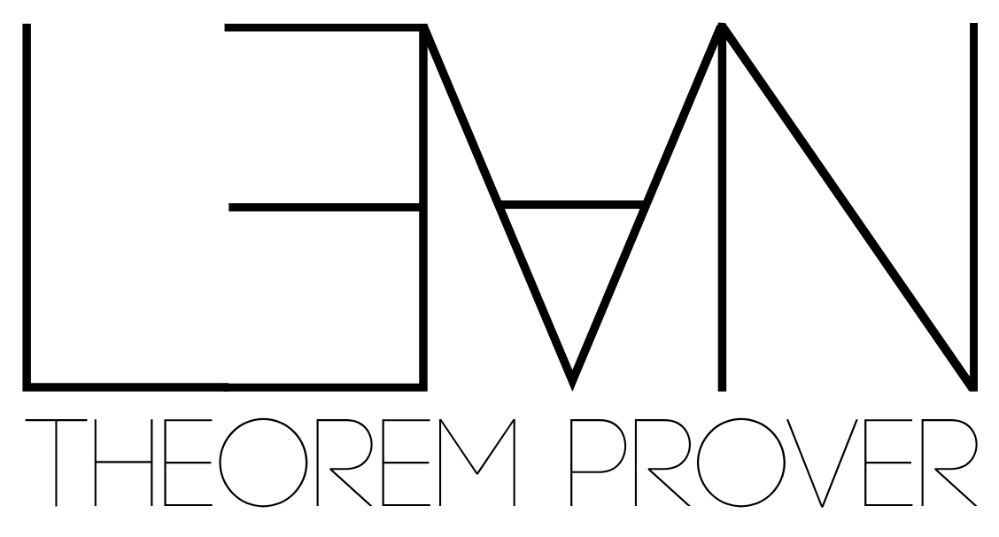

The algebraic construction underlying the main EAQECC family theorem is formalized and kernel-checked in Lean, with Lean sources included in the artifact.
Abstract
LLM-guided program evolution can produce mathematical constructions, but validity, generality, and reproducibility require distinct evidence. In this paper, we develop a researcher-in-the-loop discovery pipeline combining program evolution, exact evaluation, mathematical generalization, and independent verification. We apply it to entanglement-assisted quantum error-correcting codes (EAQECCs). Evolved programs produced finite qubit constructions from specifications that supplied no family formula. Researcher-directed analysis with a language model led to a general construction and proof drafts, which the researchers revised and checked. The resulting family $[[n,1,n-1;n-q-1]]_q$ exists for prime powers $q\ge3$ at $n\ge2q+1$ and for $q=2$ at odd $n\ge5$; Lean checks its formalized algebraic core. With entanglement lifting, it closes 54 listed table gaps. The evidence includes 115 verified code records, ten DRAT-checked nonexistence results, family implementations and preserved search programs. Controlled studies test how research proposals interact with program generation. Under a mutation-and-restart proposal, iterative evolution improves normalized success-curve area in all ten paired runs and raises success at excluded lengths $n=13,15$ from 13.4% to 62.5% and from 0.9% to 33.4%, respectively. The benefit depends on the proposal. Selected programs combine the proposed moves with objective and restart-counter changes. The pipeline connects finite computational discoveries to a proved family and independently checkable constructions.
Problem
LLM-guided program evolution can produce mathematical constructions, but establishing their validity, generality and reproducibility requires separate evidence. The application is entanglement-assisted quantum error-correcting codes (EAQECCs), where many tabulated distance bounds have remained open gaps.
Approach
A researcher-in-the-loop pipeline combines AlphaEvolve program evolution, exact finite-field evaluation, SAT/DRAT nonexistence certificates and researcher-led generalization of the discovered codes into a proved family. The algebraic core of the family theorem is formalized and checked in Lean, and finite instances are cross-checked with Magma. Controlled ablations compare iterative evolution with independent proposals under a shared research proposal.

Figure 1: The researcher-in-the-loop discovery pipeline.
Results
The family [[n,1,n-1;n-q-1]]_q is proved for prime powers q≥3 at n≥2q+1 and for q=2 at odd n≥5. Together with entanglement lifting, it closes 54 listed table gaps, supported by 115 verified code records and ten DRAT-checked nonexistence results. In the ablations, iterative evolution raises held-out success at n=13 from 13.4% to 62.5% and at n=15 from 0.9% to 33.4%.
Code (listed d range)
Ours d
Reference
[[7,1,5–6;4]]_2
6
Grassl et al. (2020)
[[9,1,7–8;6]]_2
8
Luo et al. (2022)
[[11,1,9–10;8]]_2
10
Luo et al. (2022)
[[12,1,9–11;8]]_2
11
Luo et al. (2022)
Selected qubit distance improvements over previously listed bounds